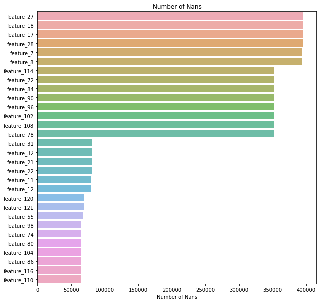
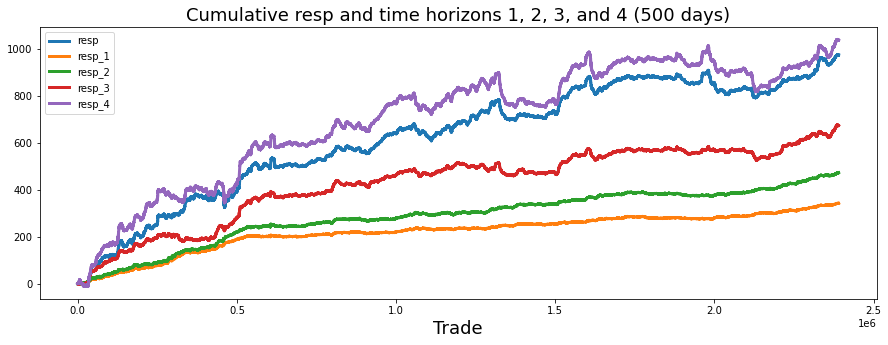
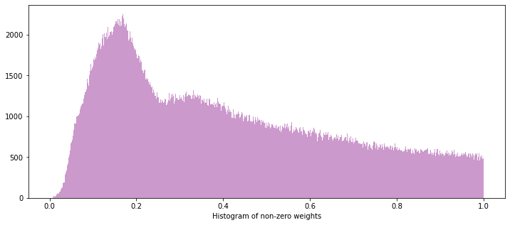
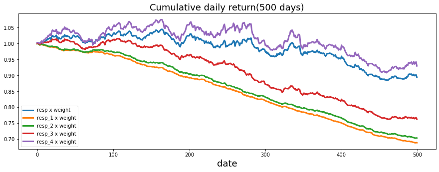
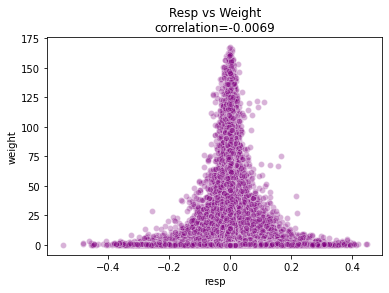
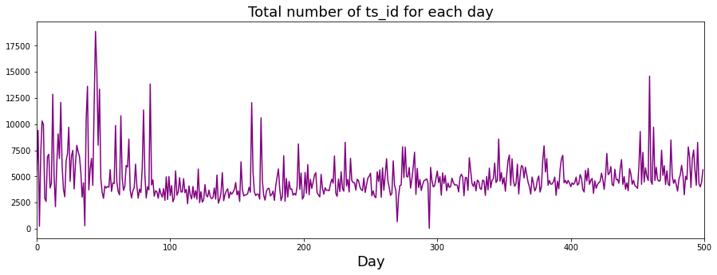
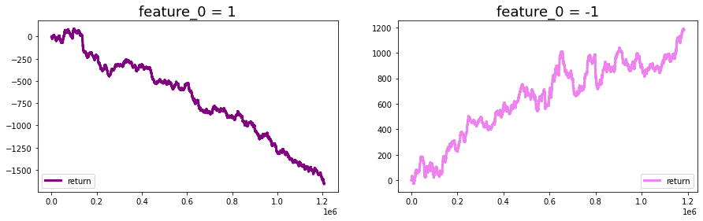
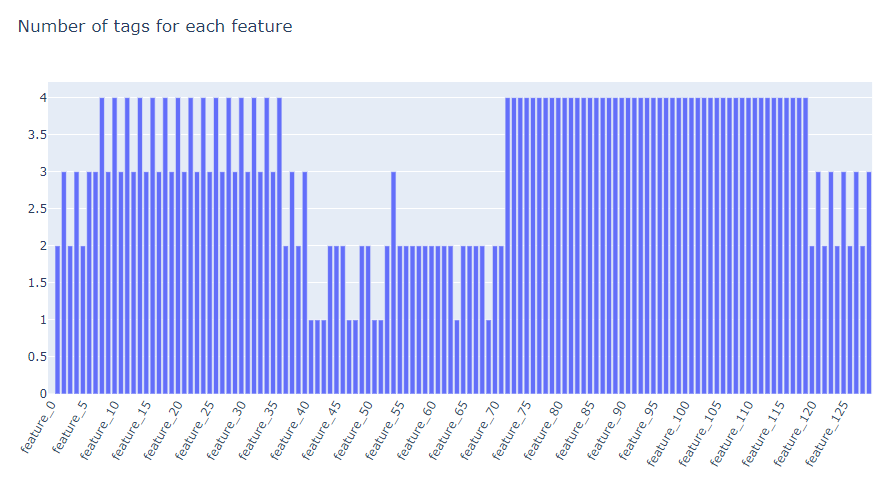
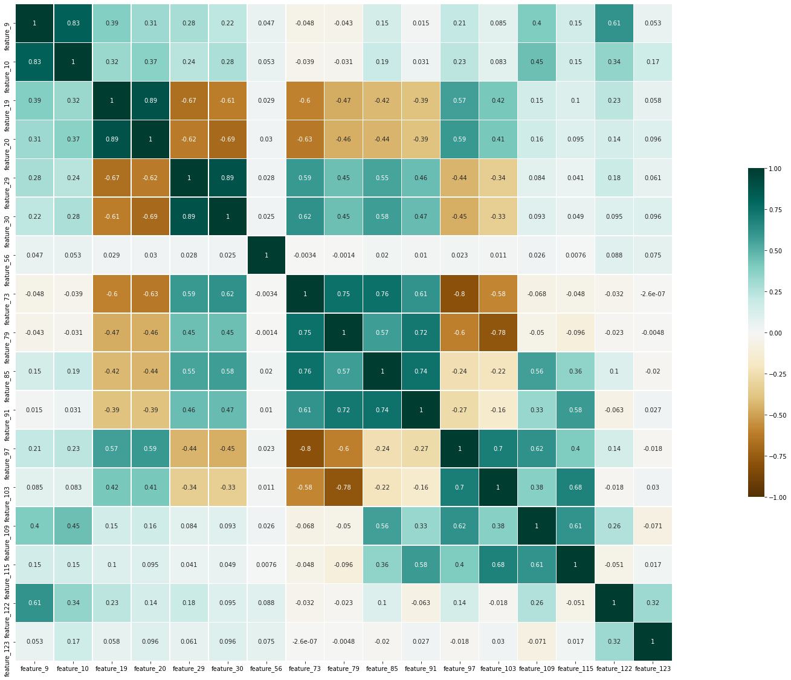

#hide_input
Image(filename = "images/jane_logo.png", width =800, height = 300)Jane Street Market Prediction Kaggle Competition
- toc: true
- badges: true
- comments: true
- author: Jaekang Lee
- categories: [python, EDA, Jane Street, Kaggle, Visualization, Big Data]
Project Definition 🏆
The project is based on Kaggle competition by Jane Street - Jane Street Market Prediction
“Buy low, sell high” sounds easy. In reality, we know trading is difficult to solve and even more so in today’s fast financial markets. Developing strategy with machine learning model can help us maximize returns using market data from a major global stock exchange. Then the competition will take our predictiveness to model against future market returns and give feedback on the leaderboard. My goal is to explore financial area of data science and explore Kaggle community as much as possible.
In general, if one is able to generate a highly predictive model which selects the right trades to execute, they would also be playing an important role in sending the market signals that push prices closer to “fair” values. That is, a better model will mean the market will be more efficient going forward. However, developing good models will be challenging for many reasons, including a very low signal-to-noise ratio, potential redundancy, strong feature correlation, and difficulty of coming up with a proper mathematical formulation.
(src: https://www.kaggle.com/c/jane-street-market-prediction/overview/description)
Dataset: 6GB of Real world financial markets.
- anonymized set of features, feature_{0…129}, representing real stock market data.
- each row in the dataset represents a trading opportunity, for which you will be predicting an action value: 1 to make the trade and 0 to pass on it.
- each trade has an associated weight and resp, which together represents a return on the trade.
- date column is an integer which represents the day of the trade, while ts_id represents a time ordering.
- in addition to anonymized feature values, you are provided with metadata about the features in features.csv.
- more info: https://www.kaggle.com/c/jane-street-market-prediction/data
Problem: Predict ‘Action’ columns
Where 1 to make the trade and 0 to pass on it. The goal is minimize choosing bad trades and maximizing good trades.
#### Proposing a solution Even the world’s finest financial expert wouldn’t be able to gain anything from this anonymized data. Hence we are forced to use machine learning or data science approach to solve this problem.
Since the goal is clear (maximize profit) we want to see which features seem important or strange through EDA and visualizations. We will also have to grasp understanding of the data so it is not just a big 6GB of numbers. This will help us decide what to do with missing values and do feature engineering to help the computer learn.
Then we are going to build classifier model to let the computer do the hard work of learning to make good predictions. Of course, these models will be terrible at first so we will have to supervise it closely with some hyperparameters and strict evaluations.
Finally, the Jane Street will evaluate our submission and tell us if it is any good : ) #### Metrics The competition is evaluated on a utility score. Each row in the test set represents a trading opportunity for which you will be predicting an action value. Each trade j has an associated weight and resp, which represents a return. Weight and resp are not defined on test data set.
For each date i, we define:
\(pi=∑_{j}(weight_{ij}∗resp_{ij}∗action{i_j})\)
\(t=\dfrac{∑p_i}{∑p_{i}^2}\sqrt{\dfrac{250}{|i|}}\)
where |i| is the number of unique dates in the test set. The utility is then defined as: \(u=min(max(t,0),6)∑pi.\)
EDA and Visualization
#hide_input
#!pip install datatable > /dev/null
import datatable as dt
import pandas as pd
import seaborn as sns
import matplotlib.pyplot as plt
import numpy as np
import matplotlib.gridspec as gridspec
import plotly.express as px
import plotly.graph_objects as go
from collections import defaultdict
# garbage collector to keep RAM in check
import gc
%matplotlib inline
# import os
# for dirname, _, filenames in os.walk('/kaggle/input'):
# for filename in filenames:
# print(os.path.join(dirname, filename))Import Data 📚
# df = pd.read_csv("../input/jane-street-market-prediction/train.csv")
df = dt.fread('../../../Kaggle/Jane-Street-Market-Prediction/input/train.csv')
df = df.to_pandas()feat = pd.read_csv("../../../Kaggle/Jane-Street-Market-Prediction/input/features.csv")#hide_input
print("df.shape: " + str(df.shape))
print("how many days? " + str(len(df.date.unique())) + "days")
df.head()df.shape: (2390491, 138)
how many days? 500days| date | weight | resp_1 | resp_2 | resp_3 | resp_4 | resp | feature_0 | feature_1 | feature_2 | ... | feature_121 | feature_122 | feature_123 | feature_124 | feature_125 | feature_126 | feature_127 | feature_128 | feature_129 | ts_id | |
|---|---|---|---|---|---|---|---|---|---|---|---|---|---|---|---|---|---|---|---|---|---|
| 0 | 0 | 0.000000 | 0.009916 | 0.014079 | 0.008773 | 0.001390 | 0.006270 | 1 | -1.872746 | -2.191242 | ... | NaN | 1.168391 | 8.313583 | 1.782433 | 14.018213 | 2.653056 | 12.600292 | 2.301488 | 11.445807 | 0 |
| 1 | 0 | 16.673515 | -0.002828 | -0.003226 | -0.007319 | -0.011114 | -0.009792 | -1 | -1.349537 | -1.704709 | ... | NaN | -1.178850 | 1.777472 | -0.915458 | 2.831612 | -1.417010 | 2.297459 | -1.304614 | 1.898684 | 1 |
| 2 | 0 | 0.000000 | 0.025134 | 0.027607 | 0.033406 | 0.034380 | 0.023970 | -1 | 0.812780 | -0.256156 | ... | NaN | 6.115747 | 9.667908 | 5.542871 | 11.671595 | 7.281757 | 10.060014 | 6.638248 | 9.427299 | 2 |
| 3 | 0 | 0.000000 | -0.004730 | -0.003273 | -0.000461 | -0.000476 | -0.003200 | -1 | 1.174378 | 0.344640 | ... | NaN | 2.838853 | 0.499251 | 3.033732 | 1.513488 | 4.397532 | 1.266037 | 3.856384 | 1.013469 | 3 |
| 4 | 0 | 0.138531 | 0.001252 | 0.002165 | -0.001215 | -0.006219 | -0.002604 | 1 | -3.172026 | -3.093182 | ... | NaN | 0.344850 | 4.101145 | 0.614252 | 6.623456 | 0.800129 | 5.233243 | 0.362636 | 3.926633 | 4 |
5 rows × 138 columns
df.describe()| date | weight | resp_1 | resp_2 | resp_3 | resp_4 | resp | feature_0 | feature_1 | feature_2 | ... | feature_121 | feature_122 | feature_123 | feature_124 | feature_125 | feature_126 | feature_127 | feature_128 | feature_129 | ts_id | |
|---|---|---|---|---|---|---|---|---|---|---|---|---|---|---|---|---|---|---|---|---|---|
| count | 2.390491e+06 | 2.390491e+06 | 2.390491e+06 | 2.390491e+06 | 2.390491e+06 | 2.390491e+06 | 2.390491e+06 | 2.390491e+06 | 2.390491e+06 | 2.390491e+06 | ... | 2.320637e+06 | 2.390268e+06 | 2.390268e+06 | 2.374408e+06 | 2.374408e+06 | 2.381638e+06 | 2.381638e+06 | 2.388570e+06 | 2.388570e+06 | 2.390491e+06 |
| mean | 2.478668e+02 | 3.031535e+00 | 1.434969e-04 | 1.980749e-04 | 2.824183e-04 | 4.350201e-04 | 4.083113e-04 | 9.838565e-03 | 3.855776e-01 | 3.576875e-01 | ... | 2.687757e-01 | 3.435523e-01 | 2.799973e-01 | 3.351537e-01 | 2.448752e-01 | 3.391778e-01 | 2.323809e-01 | 3.425608e-01 | 2.456182e-01 | 1.195245e+06 |
| std | 1.522746e+02 | 7.672794e+00 | 8.930163e-03 | 1.230236e-02 | 1.906882e-02 | 3.291224e-02 | 2.693609e-02 | 9.999518e-01 | 2.559373e+00 | 2.477335e+00 | ... | 2.174238e+00 | 2.087842e+00 | 1.977643e+00 | 1.742587e+00 | 2.242853e+00 | 2.534498e+00 | 1.795854e+00 | 2.307130e+00 | 1.765419e+00 | 6.900755e+05 |
| min | 0.000000e+00 | 0.000000e+00 | -3.675043e-01 | -5.328334e-01 | -5.681196e-01 | -5.987447e-01 | -5.493845e-01 | -1.000000e+00 | -3.172026e+00 | -3.093182e+00 | ... | -7.471971e+00 | -5.862979e+00 | -6.029281e+00 | -4.080720e+00 | -8.136407e+00 | -8.215050e+00 | -5.765982e+00 | -7.024909e+00 | -5.282181e+00 | 0.000000e+00 |
| 25% | 1.040000e+02 | 1.617400e-01 | -1.859162e-03 | -2.655044e-03 | -5.030704e-03 | -9.310415e-03 | -7.157903e-03 | -1.000000e+00 | -1.299334e+00 | -1.263628e+00 | ... | -1.123252e+00 | -1.114326e+00 | -9.512009e-01 | -9.133750e-01 | -1.212124e+00 | -1.452912e+00 | -8.993050e-01 | -1.278341e+00 | -8.544535e-01 | 5.976225e+05 |
| 50% | 2.540000e+02 | 7.086770e-01 | 4.552665e-05 | 6.928179e-05 | 1.164734e-04 | 1.222579e-04 | 8.634997e-05 | 1.000000e+00 | -1.870182e-05 | -7.200577e-07 | ... | 0.000000e+00 | 7.006244e-17 | 6.054629e-17 | 4.870826e-17 | -2.558675e-16 | 1.015055e-16 | 5.419920e-17 | 8.563069e-17 | 4.869529e-17 | 1.195245e+06 |
| 75% | 3.820000e+02 | 2.471791e+00 | 2.097469e-03 | 2.939111e-03 | 5.466336e-03 | 9.804649e-03 | 7.544347e-03 | 1.000000e+00 | 1.578417e+00 | 1.526399e+00 | ... | 1.342829e+00 | 1.405926e+00 | 1.308625e+00 | 1.228277e+00 | 1.409687e+00 | 1.767275e+00 | 1.111491e+00 | 1.582633e+00 | 1.125321e+00 | 1.792868e+06 |
| max | 4.990000e+02 | 1.672937e+02 | 2.453477e-01 | 2.949339e-01 | 3.265597e-01 | 5.113795e-01 | 4.484616e-01 | 1.000000e+00 | 7.442989e+01 | 1.480763e+02 | ... | 1.107771e+02 | 4.812516e+01 | 1.276908e+02 | 6.514517e+01 | 7.052807e+01 | 5.872849e+01 | 6.932221e+01 | 5.119038e+01 | 1.164568e+02 | 2.390490e+06 |
8 rows × 138 columns
feat.describe()| feature | tag_0 | tag_1 | tag_2 | tag_3 | tag_4 | tag_5 | tag_6 | tag_7 | tag_8 | ... | tag_19 | tag_20 | tag_21 | tag_22 | tag_23 | tag_24 | tag_25 | tag_26 | tag_27 | tag_28 | |
|---|---|---|---|---|---|---|---|---|---|---|---|---|---|---|---|---|---|---|---|---|---|
| count | 130 | 130 | 130 | 130 | 130 | 130 | 130 | 130 | 130 | 130 | ... | 130 | 130 | 130 | 130 | 130 | 130 | 130 | 130 | 130 | 130 |
| unique | 130 | 2 | 2 | 2 | 2 | 2 | 2 | 2 | 2 | 2 | ... | 2 | 2 | 2 | 2 | 2 | 2 | 2 | 2 | 2 | 2 |
| top | feature_25 | False | False | False | False | False | False | False | False | False | ... | False | False | False | False | False | False | False | False | False | False |
| freq | 1 | 113 | 113 | 113 | 113 | 113 | 122 | 90 | 128 | 128 | ... | 123 | 125 | 125 | 121 | 82 | 118 | 118 | 118 | 118 | 118 |
4 rows × 30 columns
As told, all the featues and even tags are anonymized. There’s not much human interpretability just from describe tables. Except feature_0 is unique by being binary.
Cleaning Data 🧹
::: {#cell-15 .cell _kg_hide-input=‘true’ execution_count=9}
#hide_input
has_nulls = set(df.columns[df.isnull().sum()!=0])
print("There are "+str(len(has_nulls))+" many cols with at least one null value")
print(has_nulls)There are 88 many cols with at least one null value
{'feature_108', 'feature_91', 'feature_115', 'feature_128', 'feature_93', 'feature_33', 'feature_24', 'feature_4', 'feature_79', 'feature_28', 'feature_19', 'feature_88', 'feature_56', 'feature_117', 'feature_31', 'feature_21', 'feature_7', 'feature_94', 'feature_16', 'feature_76', 'feature_96', 'feature_12', 'feature_55', 'feature_29', 'feature_120', 'feature_35', 'feature_124', 'feature_32', 'feature_74', 'feature_17', 'feature_116', 'feature_97', 'feature_86', 'feature_105', 'feature_127', 'feature_36', 'feature_99', 'feature_34', 'feature_104', 'feature_10', 'feature_100', 'feature_58', 'feature_87', 'feature_111', 'feature_122', 'feature_80', 'feature_78', 'feature_25', 'feature_18', 'feature_59', 'feature_26', 'feature_73', 'feature_92', 'feature_15', 'feature_81', 'feature_27', 'feature_13', 'feature_112', 'feature_109', 'feature_125', 'feature_3', 'feature_98', 'feature_82', 'feature_84', 'feature_45', 'feature_90', 'feature_9', 'feature_8', 'feature_118', 'feature_75', 'feature_123', 'feature_22', 'feature_11', 'feature_23', 'feature_44', 'feature_20', 'feature_114', 'feature_106', 'feature_14', 'feature_102', 'feature_129', 'feature_110', 'feature_85', 'feature_126', 'feature_121', 'feature_30', 'feature_103', 'feature_72'}:::
A lot of the histogram of above features has extreme outliers. For the full enlarged version of the histograms, check out here It would be safe to fill the null values with medians. Other imputation method considered were mean and KNN-Imputation. Check out my other notebook where KNN-Imputation was used to train MLP.
::: {#cell-17 .cell _kg_hide-input=‘true’ execution_count=21}
#hide_input
nan_count = df.isna().sum()[df.isna().sum() > 0].sort_values(ascending=False)
print("feature with most nans: feature_27 with " + str(nan_count[0]))
fig, axs = plt.subplots(figsize=(10, 10))
sns.barplot(y = nan_count.index[0:30],
x = nan_count.values[0:30],
alpha = 0.8
)
plt.title('Number of Nans')
plt.xlabel('Number of Nans')
plt.show()feature with most nans: feature_27, with 395535
:::
If we just remove all nans, we would be removing more than 16.54% of the dataset.
::: {#cell-19 .cell _kg_hide-input=‘true’}
#hide_input
df = df.apply(lambda x: x.fillna(x.median()),axis=0)
print("Number of features with null values after median imputation: ",np.sum(df.isna().sum()>0)):::
Interesting points so far: - feature_0 is binary. - A lot of features seems to be normally distributed. - A lot of missing values.
Plots & Visualization 📊
resp, resp_1, resp_2, resp_3, resp_4
::: {#cell-23 .cell _kg_hide-input=‘true’ execution_count=25}
#hide_input
fig, ax = plt.subplots(figsize=(15, 5))
balance= pd.Series(df['resp']).cumsum()
resp_1= pd.Series(df['resp_1']).cumsum()
resp_2= pd.Series(df['resp_2']).cumsum()
resp_3= pd.Series(df['resp_3']).cumsum()
resp_4= pd.Series(df['resp_4']).cumsum()
ax.set_xlabel ("Trade", fontsize=18)
ax.set_title ("Cumulative resp and time horizons 1, 2, 3, and 4 (500 days)", fontsize=18)
balance.plot(lw=3)
resp_1.plot(lw=3)
resp_2.plot(lw=3)
resp_3.plot(lw=3)
resp_4.plot(lw=3)
plt.legend(loc="upper left")
del resp_1
del resp_2
del resp_3
del resp_4
gc.collect();
:::
We can see that resp is closely related to resp_4 (blue and purple). Resp_1 and resp_2 also seem to be closely related but much much linear. Resp_3 seem to be in the middle, where the shape is closer to upper group but position is slightly closer to green and orange.
Weights
Note: weight and resp multiplied together represents a return on the trade.
::: {#cell-27 .cell _kg_hide-input=‘true’ execution_count=11}
#hide_input
plt.figure(figsize = (12,5))
ax = sns.distplot(df['weight'],
bins=1000,
kde_kws={"clip":(0.001,1)},
hist_kws={"range":(0.001,1)},
color='purple',
kde=False);
values = np.array([rec.get_height() for rec in ax.patches])
norm = plt.Normalize(values.min(), values.max())
plt.xlabel("Histogram of non-zero weights", size=10)
plt.show();
del values
gc.collect();
:::
We can see that most weights are around 0.2 and we can see two ‘peaks’ which is around 0.2 and 0.3. Note that maximum weight was 167.29 represented by 1.0 on x-axis. Thus 0.2 represents around 33.458 and 0.3 represents around 50.187.
::: {#cell-29 .cell _kg_hide-input=‘true’ execution_count=9}
#hide_input
df['weight_resp'] = df['weight']*df['resp']
df['weight_resp_1'] = df['weight']*df['resp_1']
df['weight_resp_2'] = df['weight']*df['resp_2']
df['weight_resp_3'] = df['weight']*df['resp_3']
df['weight_resp_4'] = df['weight']*df['resp_4']
fig, ax = plt.subplots(figsize=(15, 5))
resp = pd.Series(1+(df.groupby('date')['weight_resp'].mean())).cumprod()
resp_1 = pd.Series(1+(df.groupby('date')['weight_resp_1'].mean())).cumprod()
resp_2 = pd.Series(1+(df.groupby('date')['weight_resp_2'].mean())).cumprod()
resp_3 = pd.Series(1+(df.groupby('date')['weight_resp_3'].mean())).cumprod()
resp_4 = pd.Series(1+(df.groupby('date')['weight_resp_4'].mean())).cumprod()
ax.set_xlabel ("Day", fontsize=18)
ax.set_title ("Cumulative daily return(500 days)", fontsize=18)
resp.plot(lw=3, label='resp x weight')
resp_1.plot(lw=3, label='resp_1 x weight')
resp_2.plot(lw=3, label='resp_2 x weight')
resp_3.plot(lw=3, label='resp_3 x weight')
resp_4.plot(lw=3, label='resp_4 x weight')
plt.legend(loc="lower left")
del resp_1
del resp_2
del resp_3
del resp_4
gc.collect()2921
:::
Note that the graph plots all the positive gains. (Our 1’s for our action column). So we can see that there were ‘bigger’ gains in the beginning and as time approach 500, the gain becomes smaller. In conclusion, the earlier trades are much bigger but we don’t know what it’s going to be like in our competition test set.
#hide_input
sns.scatterplot(data=df, x='resp',y='weight', color= 'purple', alpha=.3)
plt.title('Resp vs Weight\ncorrelation={}'.format(round(df.weight.corr(df.resp),4)));
We know that we probability want to invest more ‘weight’ if there are bigger ‘resp’(return). We learn here that higher weights are only when resp is close to 0. In other words, it is dumb to trade if resp is away from 0 but it is safe to invest even a lot if it is near 0.
::: {#cell-33 .cell _kg_hide-input=‘true’ execution_count=13}
#hide_input
trades_per_day = df.groupby(['date'])['ts_id'].count()
fig, ax = plt.subplots(figsize=(15, 5))
plt.plot(trades_per_day, color="purple")
ax.set_xlabel ("Day", fontsize=18)
ax.set_title ("Total number of ts_id for each day", fontsize=18)
ax.set_xlim(xmin=0)
ax.set_xlim(xmax=500)
plt.show()
gc.collect()
74963:::
In the Kaggle community, there’s been lots of discussion on how the trends changed significantly since day ~85. We can see much more trades happening before day 100. Rest of the days are still very active but not as noisy. We can suggest that there has been a change of trading model from Jane Street as discussed here by Carl.
Let us look at the most important feature, ‘feature_0’
df['feature_0'].value_counts() 1 1207005
-1 1183486
Name: feature_0, dtype: int64::: {#cell-37 .cell _kg_hide-input=‘true’ execution_count=15}
#hide_input
feature_0_is_plus_one = df.query('feature_0 == 1').reset_index(drop = True)
feature_0_is_minus_one = df.query('feature_0 == -1').reset_index(drop = True)
# the plot
fig, (ax1, ax2) = plt.subplots(1, 2, figsize=(15, 4))
ax1.plot((pd.Series(feature_0_is_plus_one['resp']*feature_0_is_plus_one['weight']).cumsum()), lw=3, label='return', color="purple")
ax2.plot((pd.Series(feature_0_is_minus_one['resp']*feature_0_is_minus_one['weight']).cumsum()), lw=3, label='return', color="violet")
ax1.set_title ("feature_0 = 1", fontsize=18)
ax2.set_title ("feature_0 = -1", fontsize=18)
ax1.legend(loc="lower left")
ax2.legend(loc="lower right");
del feature_0_is_plus_one
del feature_0_is_minus_one
gc.collect();
:::
Interestingly, when feature_0 is 1, plot shows negative slope while in contrast, when feature_0 is -1, plot shows positive slope. My guess is that feature_0 corresponds to Buy(1) and Sell(-1) or vice versa. So if we set action to 1 with feature_0 = 1 then we are selling and when we set action to 0 with feature_0 = -1, then we are buying. This makes sense since whether we are buying or selling we can still lose or gain profit.
Features
Remember that we have another file called features.csv. Which can help us understand 100+ features and maybe cluster into groups. Let’s take a look.
#hide_input
from IPython.display import Image
# Load image from local storage
Image(filename = "images/tags.png", width =800, height = 600)
#hide_input
# fig = px.bar(feat.set_index('feature').T.sum(), title='Number of tags for each feature')
# fig.layout.xaxis.tickangle = 300
# fig.update_traces( showlegend = False)
# fig.layout.xaxis. dtick = 5
# fig.layout.xaxis.title = ''
# fig.layout.yaxis.title = ''
# fig.show()Let us see what tag_0 groups tells us.
#hide_input
categories = defaultdict(list)
for columns in feat.columns[1:]:
categories[f'{columns}'].append(feat.query(f'{columns} == True')['feature'].to_list())
corr = df[[*categories['tag_0'][0]]].corr()
# Set up the matplotlib figure
f, ax = plt.subplots(figsize=(45, 20))
# Draw the heatmap with the mask and correct aspect ratio
sns.heatmap(corr, cmap='BrBG', center=0,vmin=-1, vmax=1, annot=True,
square=True, linewidths=.5, cbar_kws={"shrink": .5})
Correlation between features of tag_0. It looks like there certainly are correlation between elements of the group except a few.
Interesting points: - feature_0 has no tags - feature 79 to 119 all has 4 tags - feature 7 to 36 have 3 and 4 tags periodically - Similar trend between 2 to 7, 37 to 40, 120 to 129 - tag_n doesn’t tell too much about the features
Reference 📖
Submission
In another notebook. ### Implementation Planning Thoughts going into predicting phase. 1. Days before ~100 can be dropped as suspicion of model shift. 2. Feature_0 seem very important to find slope of cummulative resp. 3. Resp near 0 is prefered over other values. 4. A lot of features are normally distributed. 5. We have over 2 million datas, it would be safe to add lot more features(feature enginerring) 6. There are a lot of missing values too. Can try mean, median or KNN imputation methods. 7. Note that although this is kind of a time series data, we can only predict with features 0 to 129